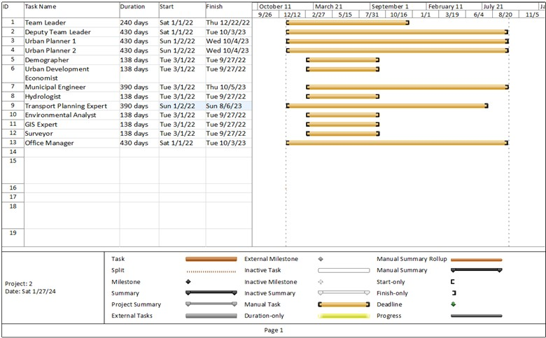

Title: Construction of New Railway Corridor from Bhanga to Kuakata Connecting Payra Port
Title: Preparation of Master Plan for Pourashavas Under Upazila Towns Infrastructure Development Project
Technical and Financial Proposal

Title: Build Back Better, Construction of Multipurpose Cyclone Shelter
Title: Char Development Project on Selected Chars of Noakhali, Lakshmipur, and Chittagong Districts